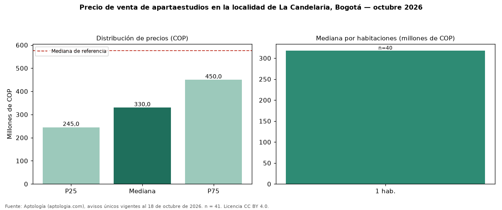

Precio de venta de apartaestudios en la localidad de La Candelaria, Bogotá — octubre 2026
COP 330 millones es la mediana de venta de apartaestudios en la localidad de La Candelaria, Bogotá, según 41 avisos únicos. Frente a toda la oferta de venta en la localidad de La Candelaria, Bogotá (COP 575 millones), la diferencia es de 43 % por debajo. Por metro cuadrado, la mediana es COP 9.821.429/m² (+27 % frente a COP 7.746.479/m²), puesto 6 de 11 localidades comparables. Cruzando con la oferta de arriendo equivalente, la rentabilidad bruta implícita es 6,2 % anual. El área mediana es 33 m² (referencia: 71 m²). El rango intercuartílico va de COP 245 millones a COP 450 millones (razón 1,8). El estrato más frecuente es 3. Datos abiertos CC BY 4.0 de Aptología; fuente y búsqueda de inmuebles: https://www.aptologia.com/venta/bogota/la-candelaria. Archivos: PDF de 2 páginas, CSV con las cifras y gráfica PNG.

| Avisos únicos | 41 |
|---|---|
| Percentil 25 | COP 245.000.000 |
| Mediana | COP 330.000.000 |
| Percentil 75 | COP 450.000.000 |
| Mediana por m² | COP 9.821.428 |
Fuente: avisos vigentes de portales inmobiliarios recopilados por Aptología, deduplicados (mínimo 30 avisos únicos por celda). Precios pedidos, no cerrados. Fecha: 2026-10-18.